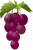
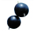
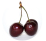
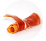

Geselecteerd: Romantische winteravond wijnen (55)
Marquis de l`Horte Minervois
Rood, Stevig
Karakter
Volle, zachte Laguedoc van topniveau. Deze Marquis de l`Horte Minervois is het levende bewijs dat de betere Languedocs ook steeds meer in de belangstelling komen te staan bij de kenners
Herkomst
Frankrijk Languedoc
Druif
Cabernet Frac
Lekker bij
- Vleesgerechten
- Gekruide schotels
- Kaas plateau
Smaak
-  Casis
-  Kers
-  licht rokerig